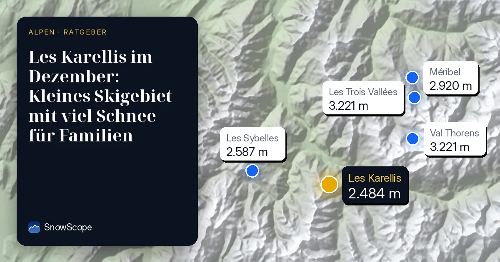

Les Karellis im Dezember: Kleines Skigebiet mit viel Schnee für Familien
Les Karellis im Dezember ist eine ruhige Wahl für Eltern, die zuverlässigen Schnee ohne hohen Preis suchen. Dieses Skigebiet im Maurienne-Tal ist kleiner als seine Nachbarn, liegt aber hoch genug, um schon früh in der Saison gutes Skifahren zu ermöglichen. Wenn du einen Familienurlaub planst, machen die Kombination aus einer Talstation auf 1.550 m und erschwinglichen Skipässen es zu einer praktischen Alternative zu den riesigen Skigebieten.
Die Live-Schneeprognose für Les Karellis in der SnowScope-AppSchneehöhen, Pulverschnee-Alarme und 3D-Karte, gratis.
Ein kleines Skigebiet mit hoher Basis
Les Karellis ist ein kompaktes Skigebiet, in dem sich Familien leicht zurechtfinden. Das markierte Skigebiet hat 45 km Pisten und 14 Lifte, was für eine Woche Skifahren mit Kindern völlig ausreicht. Das Skigebiet beginnt auf 1.550 m und reicht bis auf 2.484 m, was einen Gesamthöhenunterschied von 934 m ergibt. Da das Dorf auf 1.550 m liegt, hast du oft Schnee direkt an den Liften.
Unsere Schneehistorie aus 46 vergangenen Wintern zeigt, dass die Basis für ein Skigebiet dieser Größe ziemlich zuverlässig ist. Die übliche Schneehöhe im Dezember an der Basis beträgt 37 cm. In einem schneereichen Winter, der etwa in 1 von 10 Wintern vorkommt, kann die Tiefe 73 cm erreichen. Selbst in einem schneearmen Winter, der ebenfalls in etwa 1 von 10 Wintern vorkommt, hat die Basis meist mindestens 16 cm Schnee. Diese Höhe ist ein großer Vorteil, wenn andere, tiefer gelegene Skigebiete noch auf eine solide Schneedecke warten.

Dezember-Schnee Woche für Woche
Die Schneehöhe in Les Karellis nimmt im Laufe des Dezembers deutlich zu. In der ersten Woche des Monats, vom 1. bis 7. Dezember, liegt die Basis in 43 % der vergangenen Winter bei 30 cm oder mehr. Bis zur Woche vom 22. bis 28. Dezember steigt diese Chance auf 76 %. Wenn du eine tiefere Schneedecke von 50 cm oder mehr an der Basis suchst, passiert das in 50 % der vergangenen Winter in der letzten Woche des Monats.
Weiter oben am Berg sind die Zahlen für frühe Besucher sogar noch besser. Auf mittlerer Höhe (2.017 m) beträgt die übliche Tiefe am 15. Dezember 63 cm. In 98 % der vergangenen Winter gibt es in der zweiten Monatshälfte auf dieser Höhe mindestens 30 cm Schnee. Am Gipfel der Lifte (2.484 m) beträgt die übliche Tiefe am 15. Dezember 98 cm. In etwa 9 von 10 Wintern hat der Gipfel des Berges bereits in der Woche vom 15. bis 21. Dezember 50 cm oder mehr Schnee.
Was eine Familie für Lifte bezahlt
Einer der Hauptgründe, warum wir uns Les Karellis ansehen, sind die Kosten. Für die Wintersaison 2026-27 kostet ein 1-Tages-Pass für Erwachsene (18+) 36,00 EUR. Das ist sehr günstig für ein Skigebiet mit 934 m Höhenunterschied. Wenn du einen längeren Aufenthalt buchst, kostet ein 6-Tage-Pass für Erwachsene 191,00 EUR. Diese Preise sind auf der offiziellen Website geprüft und helfen einer Familie, die Gesamtkosten der Reise niedrig zu halten.
Das Skigebiet ist so konzipiert, dass es einfach und erschwinglich ist. Mit 14 Liften, die 45 km Pisten bedienen, zahlst du nicht für ein riesiges Netzwerk von hunderten Kilometern, die kleine Kinder vielleicht gar nicht nutzen. Stattdessen zahlst du für ein funktionales Gebiet, das einen hohen Gipfellift auf 2.484 m hat, was sicherstellt, dass du auch dann guten Schnee findest, wenn es im Dorf wenig Schnee gibt.
Wie es im Vergleich zu Valloire-Valmeinier abschneidet
Es ist nützlich, Les Karellis mit Valloire-Valmeinier zu vergleichen, das ein viel größerer Nachbar ist. Valloire-Valmeinier hat 131 km markierte Pisten und 34 Lifte, ist aber auch teurer. Ein 6-Tage-Galibier-Thabor-Pass für Erwachsene kostet dort 278,50 EUR, und ein 1-Tages-Pass für Erwachsene liegt bei 54,90 EUR. Obwohl Valloire-Valmeinier mit 2.738 m höher reicht, ist seine Basis mit 1.406 m tiefer.
Wenn wir uns den Schnee auf mittlerer Höhe ansehen, sind beide sehr ähnlich. Auf 2.017 m in Les Karellis beträgt die übliche Dezember-Tiefe 63 cm. In Valloire-Valmeinier auf 2.072 m sind es 66 cm. Beide Skigebiete haben eine 98 %ige Chance, in der zweiten Dezemberhälfte auf mittlerer Höhe 30 cm oder mehr Schnee zu haben. Für eine Familie bietet Les Karellis fast die gleiche Schneesicherheit wie sein größerer Nachbar, aber zu einem viel niedrigeren Preis.
Was du vor der Buchung beachten solltest
Unsere Schneehistorie zeigt, dass der Dezember in Les Karellis im Laufe der Zeit tatsächlich schneereicher wird. Auf mittlerer Höhe lag der Dezember-Durchschnitt in den ersten 15 Wintern (1980-81 bis 1994-95) bei 55 cm. In den letzten 15 Wintern (2011-12 bis 2025-26) ist dieser Durchschnitt auf 64 cm gestiegen. Dieser Trend ist ein gutes Zeichen für alle, die eine Reise im Dezember 2026 planen.
Stand 13. November 2026 beginnt die Saison gut. Es gibt derzeit 0 cm an der Basis und 3 cm am Gipfel, aber die nächsten 7 Tage sollten 32 cm Neuschnee an der Basis und 86 cm am Gipfel bringen. Die Zwei-Wochen-Prognose für mittlere Höhe und darüber zeigt eine Spanne von 68 cm bis 104 cm Neuschnee. Überprüfe immer die offizielle Website für den 191,00 EUR 6-Tage-Pass und behalte die Berichte vom Berg im Auge, wenn deine Reise näher rückt.
Tipps für Skifahrer
- Buche deine Reise für die zweite Dezemberhälfte, wenn die Chance auf eine 30 cm Basis auf 70 % oder mehr steigt.
- Bleib auf den Pisten auf mittlerer Höhe bei 2.017 m, wenn die Basis dünn ist, da dort nach dem 15. Dezember eine 98 %ige Chance auf Schnee besteht.
- Kaufe den 6-Tage-Pass für Erwachsene auf der offiziellen Website für 191,00 EUR, um das beste Preis-Leistungs-Verhältnis zu erhalten.
- Überprüfe den Lawinenlagebericht, bevor du abseits der Pisten fährst, besonders wenn die Tiefe am Gipfel nahe den üblichen 98 cm liegt.
- Vergleiche den Tagespreis von 36,00 EUR mit nahegelegenen Skigebieten, wenn du nur für ein paar Tage skifahren möchtest.
Weitere Karten (externe Seiten)
Quellen und Nachweise
- Les Karellis, official prices 2026-2027 www.leskarellis.com/fr/tarifs-2026-2027-sans-lien
- Valloire, official ski pass shop (Galibier-Thabor), winter 2026-27 skipass.valloire.com/fr/
- SnowScope, December snow at three heights and today's snow map snowscope.app/
Zu diesen Zahlen
Schneewerte: SnowScope-Schneehistorie, 46 vergangene Winter (1980-81 bis 2025-26) auf drei Höhen jedes Skigebiets (ein höhenkorrigiertes Modell der Vergangenheit: eine Schätzung für eine Fläche, keine Messungen des Skigebiets); Dezemberwerte aus den täglichen Schneehöhen dieser Winter. Aktueller Schnee und Zwei-Wochen-Ausblick: SnowScope-Prognosen (Ausblick aus ECMWF und GFS, eine Spanne, kein Versprechen). Lifte und Pisten: OpenSkiMap-Kartierung. Preise: die offiziellen Seiten unten, gelesen am 2026-11-13; Preise können sich ändern, vor der Buchung prüfen.
Offizielle Lawinenlageberichte: Météo-France – Bulletin d'estimation du risque d'avalanche
Diesen Bericht zitieren
Für Forschung, Lehre oder Presse: Zahlen und Grafiken sind unter CC BY 4.0 mit dieser Quellenangabe frei nutzbar.
SnowScope (2026), Les Karellis im Dezember: Kleines Skigebiet mit viel Schnee für Familien, https://snowscope.app/blog/de/2026/11/les-karellis-small-resort-december-ski-week-price-2026.html, abgerufen am 2026-11-14
SnowScope (Atlas Labs). (2026, November 14). Les Karellis im Dezember: Kleines Skigebiet mit viel Schnee für Familien. SnowScope snow reports. https://snowscope.app/blog/de/2026/11/les-karellis-small-resort-december-ski-week-price-2026.html
BibTeX
@misc{snowscope2026leskarellissmallresortde,
author = {{SnowScope (Atlas Labs)}},
title = {Les Karellis im Dezember: Kleines Skigebiet mit viel Schnee für Familien},
year = {2026},
month = nov,
howpublished = {\url{https://snowscope.app/blog/de/2026/11/les-karellis-small-resort-december-ski-week-price-2026.html}},
note = {Published 2026-11-14 13:29 UTC; accessed 2026-11-14}
}· CC BY 4.0 · Methoden, Daten und Werkzeuge →
Les Karellis: Schnee und Temperatur nach Höhe, dieser Winter vs letzter (Werkzeuge) →
Les Karellis folgen
Gratis: eine Nachricht, wenn Neuschnee kommt, und jeden Morgen die Vorhersage.